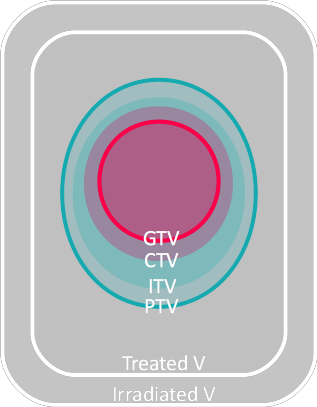
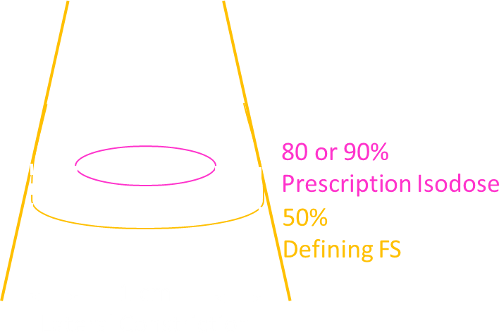

| Guidelines |
ICRU Report ( ) - Prescribing, Recording and Reporting ( ) Beam Therapy
QUANTEC RTOG Radiotherapy Oncology Group |
|||||||||||||||||||||||||||
| Treatment Course and Phase |
Course
Phase
|
|||||||||||||||||||||||||||
| ICRU Volume Definition |

How to define the size of margin
Different machine/treatment technique/setup etc. → different margins
e.g. for H&N (QEH)
PTV 70 =
GTV + 3 mm ↓ + 1 cm CTV PTV 66 ← ↓ + setup margin PTV 60 = potential lymph node spread |
|||||||||||||||||||||||||||
| Plan Normalisation |
e.g. if normalise to 95%
MU ↑ 5%
dose ↑ 5% |
|||||||||||||||||||||||||||
| Electron Cut-out |
Customised Coutout
request sent to mould lab
(QEH) > if area>10% from regular cutout > need measurement of customised cutout factor Cutout on Jig (instead of cone + insert + cutout)
→ measure point dose at isocentre
↑ information need to know before measurement
→ \( CF = \Large \frac{Standard~Cone~(nC)}{Tx~Setup~(nC)} \)
\( MU = \Large \frac{Prescribed~Dose~(cGy)}{Prescribed~Isodose \times CF} \)
Prescribed isodose e.g. 90% |
| Physical Wedge |
Optimal Wedge Angle
to produce uniform dose distribution
\[ 90^\circ - \frac{1}{2}\theta_{hinge} \]
|
| Dynamic Wedge |
use STT to define MU and different collimator position Limitations
:) non-wedge direction any size
:( wedge direction, min FS :( thin end stationary (?) :( min MU :( wedge direction might not be the same as MLC direction Wedge Angle
angle between
80% isodose line tangent at central axis and normal line to central axis |
| Bolus vs Compensator |
Bolus :) can be modelled in TPS Compensator :) ✓ skin sparing :( laborious + time consuming |
| e- vs superficial X-ray |
Electron Beam
:) NO increase dose to bone bone
:) deep tissue sparing :) ↑ dose rate :) slight skin sparing Superficial X-ray
:) shape field with THIN sheet of lead
|
| Electron Beam FS |

|
| Course/Phase |
1 Course = tx involving several sites 1 Phase = progression of tx across time |